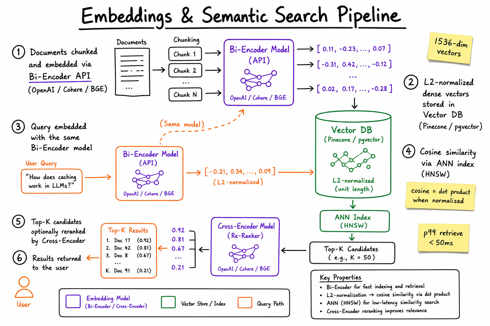
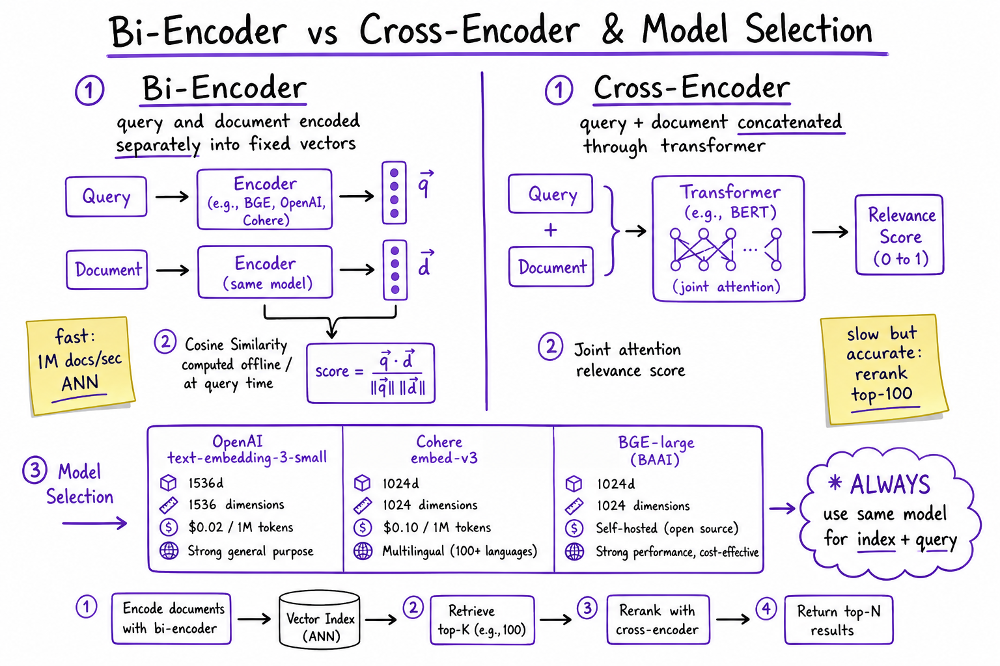
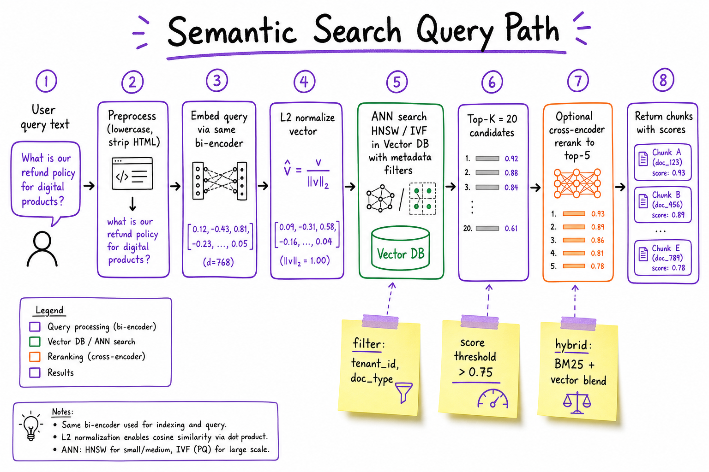

Embeddings & Semantic Search // Fundamentals
Turn text into dense vectors so meaning—not keywords—drives retrieval. Bi-encoders embed offline at scale; cross-encoders rerank for precision. Cosine similarity on L2-normalized vectors powers every RAG, semantic cache, and recommendation system.

End-to-end semantic search: documents chunked and embedded via a bi-encoder (OpenAI/Cohere/BGE), L2-normalized vectors indexed in a vector DB, query embedded with the same model, ANN retrieval via cosine similarity, optional cross-encoder rerank on top-K.
01 — What & Why
Functional
- Convert text (documents, queries, product titles) into fixed-size numeric vectors that capture semantic meaning
- Find the most similar items to a query by vector distance, not exact keyword match
- Support multilingual and paraphrase queries ("refund policy" matches "how do I get my money back")
- Enable retrieval-augmented generation (RAG), deduplication, clustering, and recommendation
Non-Functional
- Latency: query embed <100ms; ANN search p99 <50ms on 10M vectors
- Recall: top-20 recall@100 >95% vs brute-force (HNSW tuning)
- Consistency: same embedding model + version for index and query (re-embed on model change)
- Cost: embedding API ~$0.02–0.13 per 1M tokens; self-hosted BGE eliminates per-token cost
- Dimensionality: 384–3072 dims; higher dims = more storage + slower ANN, not always better recall
Why not keyword search? BM25 misses synonyms, paraphrases, and cross-language matches. Embeddings capture distributional semantics—words that appear in similar contexts get similar vectors. Hybrid (BM25 + vector) is production default.
01a — Core Concepts
| Term | Definition | Gotcha |
|---|---|---|
| Dense vector / embedding | Fixed-length float array (e.g. 1536 dims) representing text semantics. | Not human-interpretable; nearest-neighbor in vector space = semantic similarity. |
| Cosine similarity | cos(θ) = A·B / (||A|| × ||B||); range −1 to 1. | After L2 normalization, cosine = dot product. Most vector DBs assume normalized vectors. |
| L2 normalization | Scale vector to unit length: v / ||v||. | Skip this and cosine vs dot product diverge. OpenAI/Cohere return pre-normalized vectors. |
| Bi-encoder | Query and document encoded independently; similarity = vector distance. | Fast (embed once, search many). Weaker than cross-encoder for fine-grained relevance. |
| Cross-encoder | Query + document concatenated; joint transformer attention produces relevance score. | Slow (O(n) forward passes). Use only on top-K candidates from bi-encoder. |
| ANN index | Approximate nearest neighbor (HNSW, IVF, PQ) for sub-linear search. | Tuning ef_search / nprobe trades latency vs recall. Always benchmark. |
| Embedding drift | Model version change shifts vector space; old index incompatible with new queries. | Version-tag embeddings; re-embed entire corpus on model upgrade. |
| Matryoshka embeddings | Truncated prefix of vector retains most signal (OpenAI v3, Cohere v3). | Store full dim; query with truncated dim for speed/storage tradeoff. |
01b — API / Interface Surface
OpenAI Embeddings
POST https://api.openai.com/v1/embeddings
{
"model": "text-embedding-3-small",
"input": ["query text", "doc chunk 1", ...],
"dimensions": 1536 // optional; Matryoshka truncate
}
→ { "data": [{ "embedding": [0.012, -0.034, ...], "index": 0 }] }
Cohere Embed v3
POST https://api.cohere.ai/v1/embed
{
"model": "embed-english-v3.0",
"texts": ["..."],
"input_type": "search_query" | "search_document",
"embedding_types": ["float"]
}
→ { "embeddings": { "float": [[...]] } }
Cohere requires different input_type for queries vs documents—asymmetric embedding. OpenAI uses the same call for both.
Self-hosted (sentence-transformers / BGE)
from sentence_transformers import SentenceTransformer
model = SentenceTransformer("BAAI/bge-large-en-v1.5")
query_vec = model.encode("how to reset password", normalize_embeddings=True)
doc_vecs = model.encode(chunks, normalize_embeddings=True, batch_size=64)
Vector DB query (Pinecone-style)
index.query(
vector=query_vec,
top_k=20,
filter={"tenant_id": "acme", "doc_type": "policy"},
include_metadata=True
)
02 — When to Use / When NOT
| Scenario | Use Embeddings? | Alternative |
|---|---|---|
| Semantic doc search, RAG retrieval | Yes — core use case | Hybrid with BM25 for exact-match terms (SKUs, error codes) |
| Exact keyword / ID lookup | No | BM25, inverted index, or direct key lookup |
| Deduplication / clustering | Yes | MinHash for near-duplicate at web scale (cheaper) |
| Real-time personalization (<5ms) | Maybe | Precomputed user vectors + in-memory ANN; or feature store |
| Structured SQL filters ("price < $50") | Hybrid | Metadata pre-filter in vector DB, then vector search |
| Small corpus (<1K docs) | Overkill | Brute-force cosine in memory, or even LLM in-context |
| Multilingual without translation | Yes | Cohere multilingual-v3 or BGE-M3 |
Rule of thumb: if the user might phrase the question differently than the document, use embeddings. If they know the exact term (order ID, SKU), use keyword.
03 — Architecture
INGEST (offline / batch)
Documents → Chunker → Bi-Encoder API → L2 Normalize → Vector DB (HNSW)
↑ ↓
same model metadata: {doc_id,
+ version chunk_idx, tenant}
QUERY (online)
User Query → Preprocess → Bi-Encoder → L2 Normalize → ANN Search (top-K=20)
↓
[Optional] Cross-Encoder Rerank → top-5
↓
Context to LLM (RAG) or direct results
04 — Dense Vectors
A dense embedding is a learned mapping from variable-length text to a fixed-dimensional real vector. Unlike sparse bag-of-words (one dimension per vocabulary token, mostly zeros), every dimension carries signal.
How they're learned
- Contrastive learning: pull similar pairs closer, push dissimilar apart (InfoNCE loss). MS MARCO, NLI datasets.
- Dual-tower architecture: shared or separate transformer encoders for query/doc towers (bi-encoder).
- Pooling: mean-pool last hidden states (most common), CLS token, or last-token (decoder models).
Properties that matter in production
| Property | Typical range | Impact |
|---|---|---|
| Dimensions | 384, 768, 1024, 1536, 3072 | Storage = N × dim × 4 bytes (float32). 1M × 1536 = ~6 GB. |
| Precision | float32, float16, int8 | PQ/scalar quantization cuts memory 4–32× with ~1–3% recall loss. |
| Max input tokens | 512–8192 | Long docs must be chunked before embedding. |
import numpy as np
def l2_normalize(v: np.ndarray) -> np.ndarray:
norm = np.linalg.norm(v, axis=-1, keepdims=True)
return v / np.clip(norm, 1e-12, None)
# 1536-dim example
vec = np.random.randn(1536)
unit = l2_normalize(vec)
assert abs(np.linalg.norm(unit) - 1.0) < 1e-6
05 — Cosine Similarity & Normalization
Cosine similarity measures the angle between two vectors, ignoring magnitude. Two documents of different length can still be semantically similar if their direction in embedding space aligns.
Why normalize?
- After L2 normalization, cosine similarity = dot product — one multiply-add loop, no division.
- Vector DBs (Pinecone, pgvector with
vector_cosine_ops) assume unit vectors for index efficiency. - Prevents long documents from dominating via larger vector norms (some models still vary norm slightly).
def cosine_similarity(a: np.ndarray, b: np.ndarray) -> float:
a_norm = l2_normalize(a)
b_norm = l2_normalize(b)
return float(np.dot(a_norm, b_norm))
def dot_product_search(query: np.ndarray, matrix: np.ndarray) -> np.ndarray:
"""matrix: (N, dim) pre-normalized doc vectors"""
q = l2_normalize(query)
return matrix @ q # scores shape (N,)
Interview trap: "Why cosine not Euclidean?" — For normalized vectors, Euclidean distance and cosine are monotonically related: ||a−b||² = 2(1 − cosθ). Use cosine when magnitude is meaningless (text semantics).
Score interpretation
| Cosine score | Meaning | Action |
|---|---|---|
| > 0.85 | Near-duplicate or very strong match | Return directly; dedup |
| 0.70 – 0.85 | Relevant | Include in RAG context |
| 0.50 – 0.70 | Weak / tangential | Filter out or rerank |
| < 0.50 | Unrelated | Drop; consider "no results" fallback |
Thresholds are model-dependent—calibrate on your eval set, not these defaults.
06 — Bi-Encoders vs Cross-Encoders

Bi-encoder: query and document encoded separately; cosine at search time (fast, indexable). Cross-encoder: query+doc through joint attention (accurate, O(n) per candidate). Production pattern: bi-encoder retrieve top-100, cross-encoder rerank to top-5.
| Bi-Encoder | Cross-Encoder | |
|---|---|---|
| Architecture | Two independent encoders (or shared weights, separate forward passes) | Single transformer; query and doc concatenated with [SEP] |
| Similarity | Cosine / dot product of fixed vectors | Classification head score (0–1 relevance) |
| Index-time cost | Embed each doc once — O(N) | Cannot pre-compute; must score each (query, doc) pair |
| Query-time cost | 1 embed + ANN search — O(log N) | K forward passes for K candidates |
| Latency (top-100 rerank) | ~50ms total retrieve | ~200–500ms on GPU batch |
| Recall@100 | Good (~85–90%) | Excellent (~95%+) but only on scored pairs |
| Examples | OpenAI ada, BGE, E5, Cohere embed | ms-marco-MiniLM-L-6-v2, Cohere rerank-v3, bge-reranker-large |
Two-stage retrieval is the production standard: bi-encoder casts a wide net (recall), cross-encoder sharpens precision on the shortlist. Never cross-encode your full corpus.
# Stage 1: bi-encoder ANN (see ../tech/vector-databases.html)
candidates = vector_db.search(query_vec, top_k=100)
# Stage 2: cross-encoder rerank
from sentence_transformers import CrossEncoder
reranker = CrossEncoder("BAAI/bge-reranker-base")
pairs = [(query, c.text) for c in candidates]
scores = reranker.predict(pairs)
ranked = sorted(zip(candidates, scores), key=lambda x: x[1], reverse=True)[:5]
07 — Embedding Model Selection
| Model | Dims | Max tokens | Cost / quality | Best for |
|---|---|---|---|---|
| OpenAI text-embedding-3-small | 1536 (truncatable to 512) | 8191 | $0.02/1M tokens; strong general English | Fast prototyping, managed infra, RAG MVP |
| OpenAI text-embedding-3-large | 3072 | 8191 | $0.13/1M tokens; MTEB top-tier | High-stakes retrieval where recall matters |
| Cohere embed-english-v3 | 1024 | 512 | API pricing; asymmetric query/doc types | Search-optimized; compress to 256/512 dims |
| Cohere embed-multilingual-v3 | 1024 | 512 | 100+ languages | Global products without translation layer |
| BGE-large-en-v1.5 | 1024 | 512 | Free self-hosted; MTEB competitive | On-prem, cost-sensitive, data privacy |
| BGE-M3 | 1024 | 8192 | Self-hosted; dense+sparse+multi-vector | Hybrid retrieval in one model |
| E5-large-v2 | 1024 | 512 | Self-hosted; prefix "query: " / "passage: " | Research-grade open source |
Selection checklist
- Same model for index + query — mixing models breaks vector space alignment.
- Benchmark on YOUR data — MTEB leaderboard ≠ your domain (legal, medical, code).
- Latency budget — API adds network hop; self-hosted on GPU ~5ms/batch of 64.
- Privacy / compliance — PII can't leave VPC → BGE on vLLM/TEI.
- Version pinning — store
model_name@versionin metadata; plan re-embed migrations.
08 — Semantic Search Pipeline

Query path: preprocess → embed (same bi-encoder) → L2 normalize → ANN search with metadata filters → top-K candidates → optional cross-encoder rerank → return scored chunks. Hybrid systems blend BM25 score with vector score.
ef_search for recall/latency.# Hybrid search score fusion (Reciprocal Rank Fusion)
def rrf_score(rank_bm25: int, rank_vector: int, k: int = 60) -> float:
return 1 / (k + rank_bm25) + 1 / (k + rank_vector)
# Or weighted linear: 0.3 * bm25_norm + 0.7 * cosine
See RAG End-to-End for how retrieved chunks feed the LLM, and Vector Databases for index tuning (HNSW, IVF, filtering).
09 — Production & Ops
| Concern | Pattern | Numbers |
|---|---|---|
| Embedding cost | Batch ingest offline; cache query embeddings for repeat searches | 1M docs × 500 tokens × $0.02/1M ≈ $10 one-time |
| Re-embedding | Blue/green index: build new index with new model, swap alias | Plan 2–4h for 10M chunks on 4 GPU workers |
| Monitoring | Track p50/p99 embed latency, ANN recall@K on golden set, score distribution drift | Alert if mean cosine top-1 drops >0.05 week-over-week |
| Rate limits | OpenAI: 1M TPM on tier 3; queue + exponential backoff | Self-hosted TEI: ~2000 embeds/sec on A10G |
| Failure modes | Embed API timeout → retry 3×; fallback to BM25-only | Empty results → lower threshold or expand query |
| Observability | Log query, top-K ids + scores, reranker scores, user click feedback | Feed clicks into fine-tune or reranker training |
10 — Where It Shows Up
- RAG End-to-End — retrieval step that grounds LLM answers in your docs
- Vector Databases — where embeddings are stored and searched (HNSW, filtering, sharding)
- Embedding Models — deeper dive on model families and fine-tuning
- Rerankers — cross-encoder stage after bi-encoder retrieval
- Hybrid Search — BM25 + vector fusion patterns
- Semantic Cache — embed query, find similar past queries, return cached LLM response
- Web Search Engine HLD — classical IR + neural re-ranking at scale
11 — Common Pitfalls
- Model mismatch — indexing with ada-002, querying with v3-small. Vectors live in different spaces; recall collapses.
- Skipping normalization — using raw dot product on unnormalized vectors ranks by document length, not semantics.
- Chunks too large — 2000-token chunks dilute specific facts; embedder loses fine-grained signal. Target 256–512 tokens.
- No metadata filtering — searching all tenants' docs; always filter by tenant/user before ANN.
- Cross-encoding the corpus — scoring 1M docs with a cross-encoder at query time = minutes of latency.
- Trusting MTEB alone — leaderboard models fail on domain jargon (medical codes, internal acronyms). Build a 50-query golden set.
- Ignoring embedding drift — silent model API updates change vector space. Pin versions; monitor score distributions.
- Threshold too high — cosine >0.85 filter returns nothing for valid paraphrases. Calibrate per model on labeled data.
12 — Interview Q&A
What is an embedding and why is it "dense"?
Why cosine similarity instead of Euclidean distance?
Explain bi-encoder vs cross-encoder tradeoffs.
How do you pick between OpenAI, Cohere, and BGE?
Why must you L2-normalize embeddings?
normalize_embeddings=True. Vector indexes (HNSW with cosine metric) assume unit vectors.Walk through a semantic search pipeline for RAG.
What happens when you change embedding models?
embedding_model@version in metadata. Typical migration: 2–4 hours for 10M chunks with GPU batching.How does hybrid search improve pure vector search?
What ANN index would you use and how do you tune it?
M (connections, default 16) and ef_search (exploration depth; higher = better recall, slower). IVF for >100M vectors with PQ compression. Always benchmark recall@K on a labeled set; don't trust defaults. Details in Vector Databases.